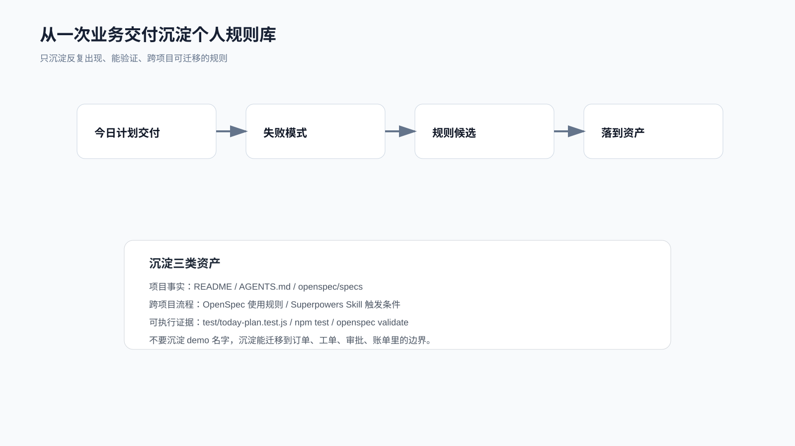

综合实战：从一次交付沉淀个人规则库
一次需求交付完，不应该只剩一段总结。
真正能提高下一次 AI Coding 稳定性的，是把这次暴露出来的失败模式、判断边界和验证方式沉淀成可复用规则。
这里继续用个人效率助手的需求：
今日计划自动纳入逾期未完成任务，并在每日容量限制下返回顺延列表。
配套代码仓库 DavidDingXu/learn-ai-coding 按一个大仓库组织。规则沉淀不能只写工具 module 的命令经验，还要回到业务 module 的需求边界、验证证据和 review 风险。这里使用 personal-productivity-app。
规则沉淀记录在：
learn-ai-coding/personal-productivity-app/dev-process/04-rule-asset-sedimentation.md

先看这次交付暴露了什么
这次需求并不大，但它暴露出几个常见问题：
业务实战容易被写成工具实战。
OpenSpec 容易被写成“风格”，而不是实际 CLI 和仓库产物。
Superpowers 容易只写 Skill 名字，不写当前入口和触发条件。
测试容易只看最终绿灯，不记录红灯。
完成汇报容易只写“测试通过”，不写验证证据。
review 容易看代码风格，漏掉业务边界。
这些问题在别的项目里也会反复出现。
所以它们值得沉淀。
规则 1：实战需求必须先写用户可见行为
不能把“执行一个命令”“新增一个工具”“整理一份上下文”直接当综合实战主线。
这些动作可以作为工具能力验证，但很难撑起一条完整交付链路；完整交付更适合从业务或产品需求开始。
判断方式很简单：
这个需求解决了哪个用户问题？
这个需求有没有状态、边界、异常、验证？
读者能不能迁移到自己的业务项目？
这次选择的是：
今日计划别漏掉逾期任务，也别把当天排爆。
读者可以迁移到：
订单超时关闭。
工单 SLA 升级。
审批任务催办。
会员权益到期提醒。
账单分期滚动。
这比“给 AI 工具加一个命令”更容易复用。
规则 2：OpenSpec 实战必须有真实命令
如果 OpenSpec 只剩这些文件名：
proposal.md
design.md
tasks.md
还不够。
一次可复查的 OpenSpec 变更至少要能追到这些证据：
openspec --version
openspec init --tools codex .
openspec new change today-plan-overdue-rollover ...
openspec instructions proposal --change today-plan-overdue-rollover --json
openspec instructions specs --change today-plan-overdue-rollover --json
openspec instructions design --change today-plan-overdue-rollover --json
openspec instructions tasks --change today-plan-overdue-rollover --json
openspec validate today-plan-overdue-rollover --strict --json --no-interactive
openspec instructions apply --change today-plan-overdue-rollover --json
以及真实目录：
openspec/changes/today-plan-overdue-rollover/
以后遇到 OpenSpec 相关交付，这条规则要优先生效：
没有真实 CLI 和 validate 输出，就不要写成 OpenSpec 实战。
规则 3：Superpowers 要写当前入口
Superpowers 的入口不是固定在某个 slash command 上。不同宿主环境可能通过 Skill、插件命令或项目规则触发同一套流程。
所以不能把旧 slash command 当作默认最佳实践，而要先核对当前环境推荐的触发方式。
沉淀规则：
使用 Superpowers 时，先核对当前平台推荐入口和 Skill/command 状态。
如果旧命令已经 deprecated，就不要把它写成当前推荐入口。
每个 Skill 都必须说明触发条件、输入、输出和验证证据。
本次真实使用的 Skill 是：
test-driven-development
systematic-debugging
requesting-code-review
receiving-code-review
verification-before-completion
规则 4：完成前必须重新跑验证
完成汇报不能引用旧输出。
本次完成前验证是：
openspec validate today-plan-overdue-rollover --strict --json --no-interactive
npm test
npm run dev
openspec instructions apply --change today-plan-overdue-rollover --json
证据是：
OpenSpec strict validate：passed 1, failed 0
npm test：pass 7, fail 0
页面验证：90 分钟下 3 个今日执行、1 个顺延；60 分钟下 2 个今日执行、2 个顺延
OpenSpec apply：total 8, complete 8, remaining 0
沉淀规则：
任何“已完成”“已修复”“测试通过”之前，都必须有当前轮新鲜命令输出。
这条规则应该放进个人工作流，成为每次完成前的固定动作。
规则 5：规则只沉淀可迁移部分
不是所有东西都值得进规则库。
不沉淀：
today-plan 这个函数名。
某次临时标题。
某个临时目录路径。
某个截图摆放方式。
某次临时判断口径。
要沉淀：
什么需求需要 spec。
什么失败需要 systematic-debugging。
什么完成声明需要 verification-before-completion。
什么 review 意见属于当前 scope。
什么交付练习必须有真实业务需求。
什么交付结果需要用户可见展示。
规则库要服务下一次开发，不是记录一次临时复盘怎么组织。
放到哪里
项目事实放仓库：
README.md
AGENTS.md
openspec/specs/
需求过程放仓库：
openspec/changes/
dev-process/
跨项目流程放个人资产：
Skill
Superpowers 使用约定
个人 AI Coding 检查清单
可执行证据放测试或脚本：
test/
scripts/
verification ledger
规则不能只留在聊天记录里。
聊天记录太容易丢，也太难被下一次任务自动读取。
一次交付后的复盘模板
你可以用这 6 个问题复盘：
1. 这次真实需求是什么，用户可见行为是什么？
2. 哪些边界一开始不清楚？
3. 哪个测试先红灯，最后哪个命令绿灯？
4. 哪些 review 风险和业务行为直接相关？
5. 哪条规则下次还能复用？
6. 这条规则应该放进项目事实、跨项目流程，还是可执行验证？
不要写成空泛总结。
比如这次可沉淀为：
有状态、日期、优先级和容量边界的需求，先落 OpenSpec spec，再写测试。
这句话能指导下一次任务。
迁移到自己的项目
假设你做的是工单系统，需求是：
SLA 快超时的工单要自动升级，但不能把所有低优工单都推给同一个值班人。
你可以直接复用这次规则：
先写用户可见行为。
用 OpenSpec 写状态、时间、优先级和容量边界。
用 TDD 先写失败测试。
用 systematic-debugging 处理测试失败。
review 时检查状态过滤、时间边界、容量分配和 deferred/overflow。
完成前跑新鲜验证。
交付后沉淀“有 SLA/容量边界的需求必须先 spec”。
这就是规则沉淀的价值。
配套资料
- 规则沉淀记录：
learn-ai-coding/personal-productivity-app/dev-process/04-rule-asset-sedimentation.md - 端到端过程记录：
learn-ai-coding/personal-productivity-app/dev-process/03-end-to-end-today-plan-delivery.md - OpenSpec 过程记录：
learn-ai-coding/personal-productivity-app/dev-process/01-openspec-today-plan-rollover.md - Superpowers 过程记录：
learn-ai-coding/personal-productivity-app/dev-process/02-superpowers-today-plan-workflow.md - OpenSpec 变更包：
learn-ai-coding/personal-productivity-app/openspec/changes/today-plan-overdue-rollover/ - 结果页：
learn-ai-coding/personal-productivity-app/index.html